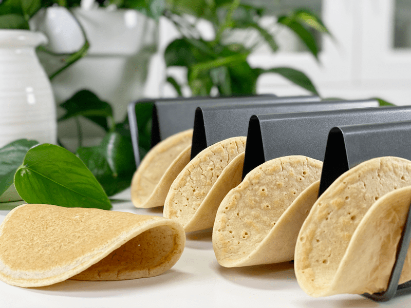
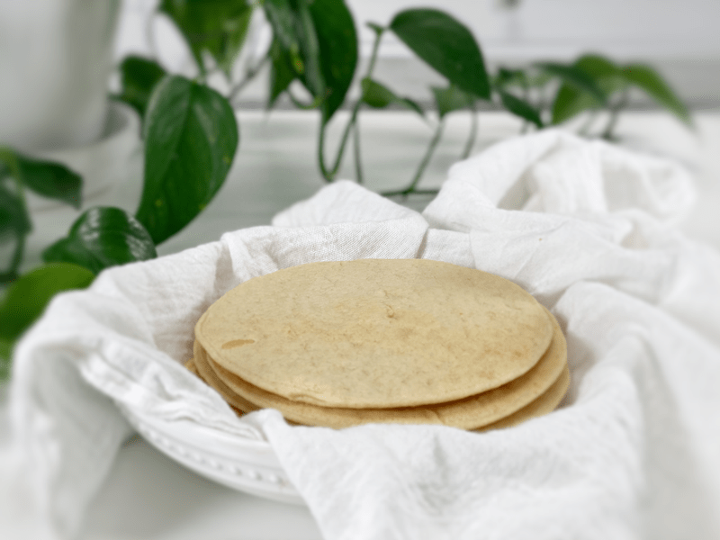
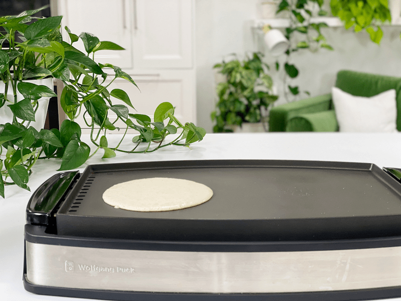
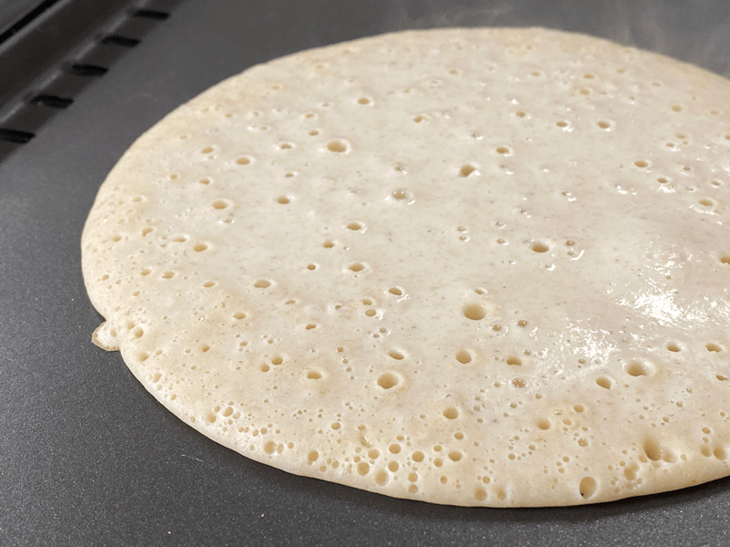
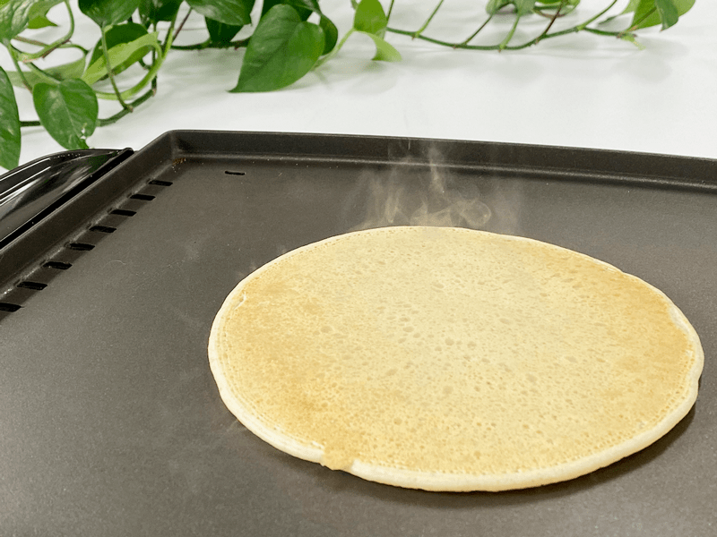
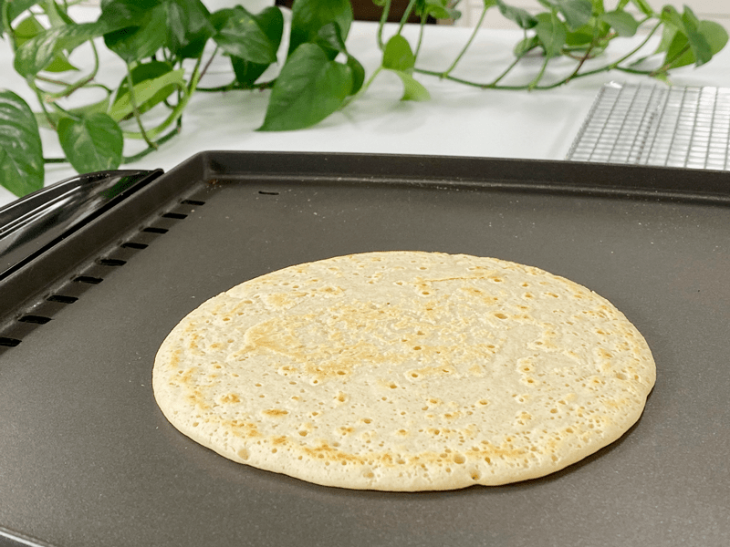

Chickpea Flour and Oat Wraps | Cooked | Oil-Free
Flexible, sturdy, springy wraps made with nothing more than rolled oats, chickpea flour, and psyllium husks (plus water and spices). Naturally vegan and gluten-free, they are fast (make-in-the-blender fast!), easy, versatile, delicious, and nutritious (high in fiber and protein)! Because when I make wraps, that’s just how I roll (pun intended).

It took me a few tries to get this recipe right. In my first attempt, I added too much psyllium husk— man oh man were they stretchy, kind of like the comic superhero, Mister Fantastic. I made a quick 15-second video (shared in the private members’ Facebook group) at just how silly they turned out. They made for some quick, spontaneous entertainment.
In the end, these wraps turned out perfect for holding your favorite filling without falling apart. They are more on the pale side, so don’t expect them to get too golden in color when cooking. They have more of a thick spongy feel to them than a flat flour tortilla does.
When I share recipes with you, it is my goal to explain why I use the ingredients that I do. Following recipes is easy, but when you understand why and how ingredients react to either technique or with other ingredients, you will start to feel comfortable in building your own recipes. The three main ingredients in these wraps are chickpea flour, rolled oats, and psyllium husks. Let’s take a sneak peek at each of them… shall we?
Ingredient Run-Down
Chickpea Flour
- Chickpea flour goes by many names: gram, besan, or garbanzo bean flour.
- One of the characteristic traits of chickpea flour is the fact that it works great as a binder in bread/wrap recipes.
- It has a strong bean flavor and can be quite dense, which is why I paired it up with oats.
- Chickpea flour is raw and tastes bitter, so it’s important to cook thoroughly to lose the bitterness and make it easily digestible.
- Chickpeas also contain a type of fiber called resistant starch, which remains undigested until it reaches your large intestine, where it serves as a food source for your healthy gut bacteria.
- It has good protein content and is also high in carbohydrates and fiber. It also provides good quantities of calcium, magnesium, folate, vitamin B6, and potassium.
- Did you know that chickpea flour can be used successfully as an egg replacer in vegan cooking or when avoiding eggs for allergy sufferers? When mixed with equal quantities of water, it can be used to replace eggs in a recipe, much like chia seeds and flaxseed. Rule of Thumb: 1 egg = ¼ cup chickpea flour + ¼ cup water
Gluten-Free Rolled Oats
- Due to the natural starches found in oats, once water is added, oats create a binding effect that helps with these wraps.
- They are an abundant source of complex carbohydrates and water-soluble fiber (produces a feeling of satiety), as well as group B vitamins, omega 6 fatty acids, and some minerals and trace elements such as zinc, copper, and manganese.
- When purchasing rolled oats, make sure that the package reads “gluten-free” to ensure that they haven’t been cross-contaminated with other gluten-containing grains.
Psyllium Husk Powder
- Psyllium powder holds moisture well and thus, when added to a gluten-free flour mix, it will add shelf life and stretch, as well as supporting structure. Psyllium husk helps to mimic gluten, giving the wrap pliability, with the bonus of an undetectable flavor/color. It’s a staple in my pantry!
- Due to its high fiber content, it’s often sold as a laxative, which can be good to know if you have a sensitive digestive system. In ratio to other ingredients, you don’t need to worry about these tortillas causing you to run to the bathroom.
- It is inexpensive and can be readily found in grocery stores. A little bit goes a long way!
- If you already have some on hand but it’s in full husk form, be sure to toss it in the grinder to create a fine flour texture.
- You can read more about it (here).

What do you think? Ready to give these wraps a test run? I hope I gave you some inspiration and encouragement, because a person can never have too many wrap recipes in their recipe arsenal. Please be sure to leave a comment below. blessings, amie sue

Ingredients
Yields 7 (6″ – 1/3 cup measurement per wrap)
- 1 1/2 cups water
- 3/4 cup gluten-free rolled oats
- 3/4 cup chickpea flour
- 1 Tbsp psyllium husk
- 1 tsp raw apple cider vinegar
- 1/2 tsp onion powder
- 1/4 tsp garlic powder
- 1/2 tsp sea salt
Preparation
- In the blender, add the water, oats, chickpea flour, psyllium husk, vinegar, onion powder, garlic powder, and salt. Process on high speed until very smooth. Pour batter into a bowl to ladle out premeasured amounts to the pan.
- If you aren’t concerned about making evenly sized tortillas, you can pour the batter straight from the blender carafe into the pan.
- Warning: RAW chickpea flour tastes awful, so I don’t advise taste-testing your batter!
- Heat a well-seasoned cast-iron or nonstick pan over medium-high heat until very hot.
- If you are not sure if your pan is nonstick, add a quick spritz or swipe of oil to the pan.
- Ladle 1/3 cup of batter into the hot pan and immediately lift and tilt so that the batter spreads to about a 6- or 7-inch circle.
- If you use a hot griddle, like me, use the bottom of a spoon to help spread it out a little bit.
- Cook for 2 minutes until set; flip over and cook about 1-minute longer. Flip, cook for 30 seconds, flip and cook for another 30 seconds. Done. Transfer to a plate or cooling rack.
- You know when to flip with bubbles form over the entire surface, pop, and don’t close back up.
- The dough doesn’t darken as it cooks, so don’t let the coloring fool you.
- Repeat with the remaining batter.
- Store leftover wraps in the fridge for 5-7 days. Be sure to slip a piece of parchment paper in between each wrap, then slide them into an airtight container or bag.
-

-
I stepped back to take a picture of the griddle I am using — just in case you were wondering.
-

-
As you can see, little bubbles pop and form while it is cooking. If those bubbles stay open, it’s a good sign to try flipping it.
-

-
Here is what side one looks like after cooking.
-

-
This is the other side when cooked.
© AmieSue.com